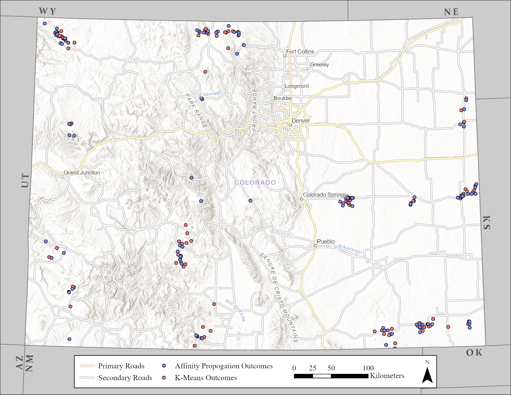
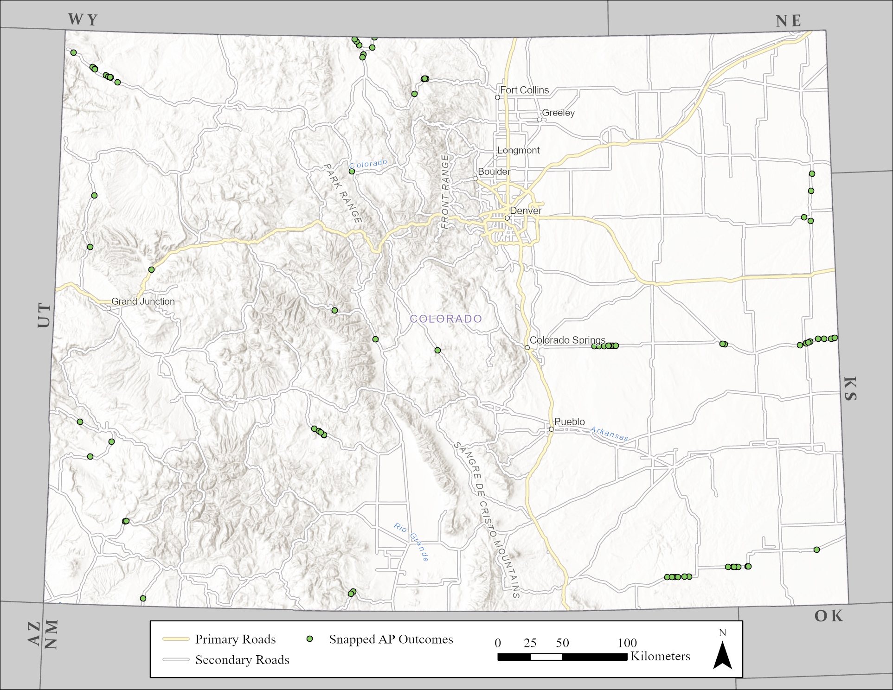

| Public Charging Station Locations in Colorado | |||||||||||
| Data shows first 6 of 1,698 station locations, with the data last collected on February 3rd, 2023 |
Electric Vehicle Charging Station Optimization üöòÔ∏è
Dr. Henricus Bouwmeester
Jason Carey
Jason Carey
Mathematics and Statistics
Dr. Sylvia Brady
Hayden Hoffmeister
Hayden Hoffmeister
Geography, Earth and Atmospheric Sciences
Project Overview
Context
If you were interested in financing a new car, specifically an electric vehicle, which would be the most reliable?
Is the EPA estimated range on the vehicle enough?
What happens if I run out of charge? Are there enough accessible stations I can get to to recharge?
Our Goals
Use semi-realistic conditions in simulated routes taken by electric vehicles to predict possible areas where you may run out of energy
Apply machine learning models to suggest new charging stations in optimal locations
Taking Action
- Our predictions are based on multiple factors, including:
- Characteristics of the top 15 electric vehicles by market share in Colorado, such as:
- EPA estimated range
- Plug compatibility (J1772, CCS1, Tesla, CHAdeMO)
- Pre-existing and planned locations for charging stations
- Availability of charging stations based on the number of charging ports at each station and random interarrival times of consumers
- Zoning restrictions within cities and counties where predictions are located
- Electric grid capacity at prediction locations
- Characteristics of the top 15 electric vehicles by market share in Colorado, such as:
Data
Inbound Sources
The data used to run our simulations and create a foundation for our models is collected from the following locations:
- Electric Vehicle Charging Stations
- US Department of Energy - Alternative Fuels Data Center: Charging Stations
- Colorado Electric Vehicle Registration Data
- Atlas EV Hub1 / Colorado Energy Office: EV Registrations
- Colorado Primary and Secondary Roadways
- US Census Bureau: Roadways
Electric Vehicle Charging Stations
- Our charging stations data table consists of the following features giving us insights into characteristics of each publicly available charging station in the state
Charging Station Map
Colorado’s Charging Station Map as of February 3rd, 2023
Electric Vehicle Sockets
When setting up our simulations we determine which vehicle is going to be used and filter the charging station table to compatible stations
To accomplish this, we’ve encoded socket compatibility with the map shown:
Note
We ignore NEMA520 and NEMA515 plugs because none of the top 15 electric vehicles by market share have compatibility with these sockets1
| Socket Compatibility Map | |
| Socket Type | Value |
|---|---|
| CCS1 | 1 |
| J1772 | 2 |
| Tesla | 3 |
| CHAdeMO | 4 |
Colorado Electric Vehicle Registration Data
- Exploring the electric vehicle registration data for Colorado we determined that the 15 vehicles shown would be used in our simulations
Note
Socket/plug compatibility is also included in this table for our simulations, however, is omitted here for clarity
| Electric Vehicles in Colorado by Market Share | ||||
| Manufacturer | Model | Range | Market Share (%) | |
|---|---|---|---|---|
| 1 | Tesla | Model 3 | 315 | 25.48% |
| 2 | Tesla | Model Y | 330 | 20.76% |
| 3 | Nissan | Leaf | 212 | 15.34% |
| 4 | Tesla | Model S | 396 | 7.99% |
| 5 | Tesla | Model X | 333 | 5.22% |
| 6 | Chevrolet | Bolt EV | 259 | 4.33% |
| 7 | Ford | Mustang Mach-E | 247 | 2.87% |
| 8 | Volkswagen | ID 4 | 275 | 1.99% |
| 9 | Audi | E-Tron | 225 | 1.67% |
| 10 | Kia | Niro | 253 | 1.47% |
| 11 | Rivian | R1T | 328 | 1.25% |
| 12 | Hyundai | IONIQ 5 | 266 | 1.22% |
| 13 | Polestar | PS2 | 270 | 0.96% |
| 14 | Kia | EV6 | 232 | 0.94% |
| 15 | Hyundai | Kona Electric | 258 | 0.89% |
| Based on active registrations with the DMV as of February 1st, 2023 | ||||
Colorado Primary and Secondary Roadways
We reference TIGER/Line Shapefiles for when we make adjustments to our machine learning model suggestions
These adjustments ensure that model suggestions are in valid locations along a primary or secondary roadways

Colorado’s Primary and Secondary Roadways
Outbound Schema
- After running the simulations, a schema has been created using the vehicle number and seed of the simulation number as keys to link all associated records
- The data frames in this schema include:
- Route details
- Charging station uses
- Vehicle information
- Simulation outcomes
- This is a sample of our simulation outcomes table, where 0 is a successful trip and 1 is unsuccessful
| Outcomes of Simulated Routes by Vehicle | |||||
| Seed | Starting Position | Ending Position | Distance (m) | Simulation Outcome | |
|---|---|---|---|---|---|
| 1 | 951720 | POINT (-104.951828 39.621671) | POINT (-107.860605 37.858262) | 602,366 | 0 |
| 1 | 951721 | POINT (-104.821852 39.673671) | POINT (-107.857259 38.99872) | 448,168 | 0 |
| 1 | 951722 | POINT (-104.772594 39.724377) | POINT (-102.133092 38.143644) | 357,291 | 0 |
| 1 | 951723 | POINT (-104.744356 39.831813) | POINT (-106.716437 37.72768) | 422,201 | 0 |
| 1 | 951724 | POINT (-104.784899 39.772744) | POINT (-108.881679 40.897455) | 505,633 | 0 |
| 1 | 951725 | POINT (-105.045554 39.630802) | POINT (-108.278067 38.260189) | 535,652 | 0 |
| Data shows first 6 of 166,725 simulated routes across 15 vehicle models | |||||
Methodology
Route Generation
- Routes created by our model adhere to a few constraints:
- They must exceed the range of the vehicle being simulated
- They must stay within Colorado
- Routes also attempt to mimic population density with:
- 60% of routes originating from the Greater Denver Metropolitan Area
- 35% of routes originating from the Greater Front Range (Colorado Springs to Fort Collins)
- 5% of routes originating from anywhere within Colorado
- Avoiding situations where outcomes could be ‘false positives’ by using charging stations outside of Colorado was critical
Route Simulation
- Simulations attempt to mimic semi-realistic conditions by following these steps:
- Select a randomized starting position within our starting polygons
- Select a randomized ending position at least the range of the vehicle away from the starting position
- Create a connecting route between the two points
- Begin ‘driving’ by reducing the vehicle’s battery according to the distance traveled
- At 30% battery capacity locate the closest charging stations and determine if they are available:
- We use a Poisson distribution generation function to determine if based on random arrivals the number of plugs at the station are full or if at least one is available for use
- If there are plugs available re-route to the station and recharge to 80% battery capacity1
- Once recharged, continue to our destination before turning around and repeating the same process on the way back to the starting position
Poisson Distribution
- A distribution used to model the probability of an event occurring given the number of events that will occur, and the average occurrence rate (\(\lambda\)) over a period of time
Mathematically expressed as
\(P\left(x, \lambda\right) = \frac{{e^{ - \lambda } \lambda ^x }}{{x!}}\) for \(x = 0, 1, 2, ...\)We can plot what this may look like over \(n = 30\) events using the following code:
## How many events will occur?
events <- c(0:30)
## Probability Mass Function
pmf <- dpois(x = events, lambda = 8)
## Make a data frame
pmf_df <- data.frame(events, pmf)
## Plot the Poisson Distribution
p <- ggplot2::ggplot(
data = pmf_df,
mapping = ggplot2::aes(
x = events,
y = pmf
)) +
ggplot2::geom_point() +
ggplot2::geom_line() +
ggplot2::labs(
title = "Poisson Distribution",
subtitle = "With x = 30, lambda = 8",
x = "Events",
y = "Probability"
) +
ggplot2::theme_light()Initial Incomplete Trips
Each vehicle was subjected to approximately 20,000 simulated trips
A large number of simulations ensured that there were enough failures to create meaningful clusters for modeling
| Overall Simulated Trip Performance by Vehicle | ||||
| Manufacturer | Model | Trips | Number Failed | Failure Percentage |
|---|---|---|---|---|
| Nissan | Leaf | 20,007 | 2,339 | 11.69% |
| Chevrolet | Bolt EV | 20,007 | 1,148 | 5.74% |
| Audi | E-Tron | 20,007 | 947 | 4.73% |
| Kia | EV6 | 20,007 | 804 | 4.02% |
| Ford | Mustang Mach-E | 20,007 | 602 | 3.01% |
| Kia | Niro | 20,007 | 516 | 2.58% |
| Hyundai | Kona Electric | 17,784 | 402 | 2.26% |
| Hyundai | IONIQ 5 | 20,007 | 312 | 1.56% |
| Polestar | PS2 | 20,007 | 303 | 1.51% |
| Volkswagen | ID 4 | 20,007 | 264 | 1.32% |
| Tesla | Model 3 | 20,007 | 68 | 0.34% |
| Tesla | Model X | 20,007 | 46 | 0.23% |
| Rivian | R1T | 20,007 | 43 | 0.21% |
| Tesla | Model Y | 20,007 | 40 | 0.20% |
| Tesla | Model S | 20,007 | 39 | 0.19% |
| Hyundai Kona Electric simulations were truncated by 2,223 because of a software related issue | ||||
Initial Incomplete Trips Map
Incomplete Phase 1 Simulations
Models
- Suggesting new station locations is dependent on two models; K-Means Clustering, and Affinity Propagation
K-Means Clustering
User-driven clustering algorithm where \(k\) is specified
Affinity Propagation
Data-driven clustering algorithm where the data relays where clusters should be centered
New Stations
By clustering our simulation outcomes, our models could suggest new station locations near the cluster centroid
To validate our model’s suggestions we would shift the proposed coordinates to the nearest primary and secondary roadways
| Model Suggestions by Vehicle | |||
| Manufacturer | Model | K-Means Suggestions | Affinity Propagation Suggestions |
|---|---|---|---|
| Tesla | Model 3 | 4 | 3 |
| Tesla | Model Y | 5 | 5 |
| Nissan | Leaf | 11 | 16 |
| Tesla | Model S | 3 | 3 |
| Tesla | Model X | 5 | 6 |
| Chevrolet | Bolt EV | 10 | 10 |
| Ford | Mustang Mach-E | 7 | 7 |
| Volkswagen | ID 4 | 5 | 6 |
| Audi | E-Tron | 12 | 13 |
| Kia | Niro | 7 | 6 |
| Rivian | R1T | 6 | 5 |
| Hyundai | IONIQ 5 | 6 | 6 |
| Polestar | PS2 | 6 | 6 |
| Kia | EV6 | 12 | 11 |
| Hyundai | Kona Electric | 7 | 6 |
New Stations Map


Final Incomplete Trips
- After incorporating the validated affinity propagation suggestions into our fuel stations data, we retried the simulations that failed to see if the outcome changed
| Vehicle Outcomes After Incorporating Model Suggestions | ||||||
| Manufacturer | Model | Simulations | Original Failures | Original Failure Percentage | New Failures | New Failure Percentage |
|---|---|---|---|---|---|---|
| Nissan | Leaf | 20,007 | 2,339 | 11.69% | 78 | 0.39% |
| Chevrolet | Bolt EV | 20,007 | 1,148 | 5.74% | 8 | 0.04% |
| Audi | E-Tron | 20,007 | 947 | 4.73% | 41 | 0.20% |
| Kia | EV6 | 20,007 | 804 | 4.02% | 22 | 0.11% |
| Ford | Mustang Mach-E | 20,007 | 602 | 3.01% | 16 | 0.08% |
| Kia | Niro | 20,007 | 516 | 2.58% | 13 | 0.06% |
| Hyundai | Kona Electric | 17,784 | 402 | 2.26% | 5 | 0.03% |
| Hyundai | IONIQ 5 | 20,007 | 312 | 1.56% | 7 | 0.03% |
| Polestar | PS2 | 20,007 | 303 | 1.51% | 12 | 0.06% |
| Volkswagen | ID 4 | 20,007 | 264 | 1.32% | 8 | 0.04% |
| Tesla | Model 3 | 20,007 | 68 | 0.34% | 8 | 0.04% |
| Tesla | Model X | 20,007 | 46 | 0.23% | 0 | 0.00% |
| Rivian | R1T | 20,007 | 43 | 0.21% | 0 | 0.00% |
| Tesla | Model Y | 20,007 | 40 | 0.20% | 0 | 0.00% |
| Tesla | Model S | 20,007 | 39 | 0.19% | 0 | 0.00% |
:::
::::
Final Incomplete Trips Map
Incomplete Phase 1 Simulations
Results
Outcome Analysis
- Were our model’s suggestions statistically significant?
## Vehicles to test
vehicles <- c(1:15)
## Data frame of results
d_test_results <-
vehicles %>%
purrr::map_dfr(
.f = ~{
## Get vehicle record
vr <-
d_phase_2_outcomes %>%
dplyr::slice(.x)
## Test results
tr <- prop.test(
x = c(vr$num_failed_bm[1], vr$num_failed_am[1]),
n = c(vr$simulations[1], vr$simulations[1]),
alternative = "two.sided",
conf.level = .99
)
## Collect values
res <-
vr %>%
dplyr::select(
vehicle_make,
vehicle_model
) %>%
dplyr::mutate(
x_squared = tr$statistic,
p_value = tr$p.value
)
}
)| Vehicle Outcomes After Incorporating Model Suggestions | |||
| Manufacturer | Model | Chi-Squared Test Statistic | P-Value |
|---|---|---|---|
| Nissan | Leaf | 2,249.05 | 0.00 |
| Chevrolet | Bolt EV | 1,155.64 | 2.67 × 10−253 |
| Audi | E-Tron | 849.96 | 7.42 × 10−187 |
| Kia | EV6 | 754.02 | 5.37 × 10−166 |
| Ford | Mustang Mach-E | 562.45 | 2.47 × 10−124 |
| Kia | Niro | 482.76 | 5.36 × 10−107 |
| Hyundai | Kona Electric | 389.76 | 9.35 × 10−87 |
| Hyundai | IONIQ 5 | 292.03 | 1.79 × 10−65 |
| Polestar | PS2 | 269.10 | 1.78 × 10−60 |
| Volkswagen | ID 4 | 240.70 | 2.77 × 10−54 |
| Tesla | Model 3 | 45.89 | 1.25 × 10−11 |
| Tesla | Model X | 44.07 | 3.16 × 10−11 |
| Rivian | R1T | 41.07 | 1.47 × 10−10 |
| Tesla | Model Y | 38.06 | 6.85 × 10−10 |
| Tesla | Model S | 37.06 | 1.14 × 10−9 |
Future Enhancements
Future Features
- In future iterations of this project we aim to enhance our simulation conditions:
- Elevation should factor into energy consumption
- Weather and temperature likely have an adverse effect on range
- Add route variation such as loops, instead of out and back trips
- We also plan to research more into the cost of removing inefficient station locations in favor of consolidating ports with minimal network reliability impact
Conclusion
Achievements
Using our simulation algorithm we were able to reduce the number of failed trips by suggesting the fewest necessary charging stations in key locations
The largest reduction was from the Nissan Leaf from 2,339 failed trips to 78 failed trips over 20,007 simulations
Closing Statements
Thanks for listening!
We hope to publish a more formal report on this topic in the future